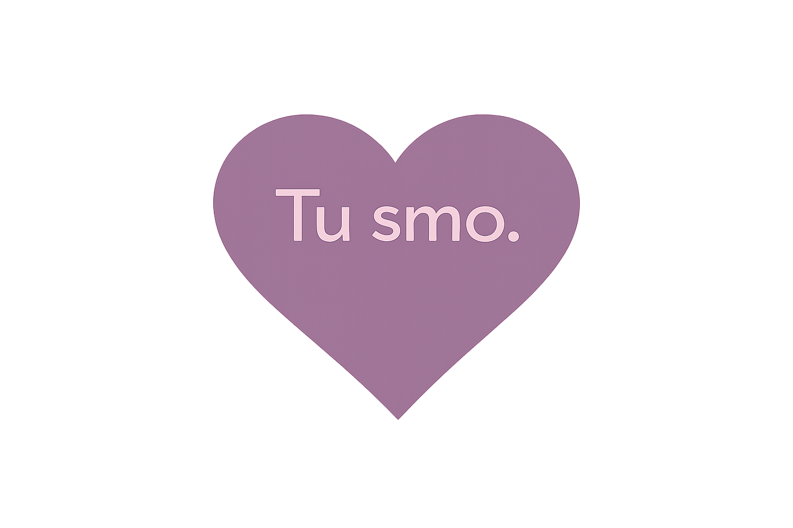

Na코i savjetodavatelji
Upoznajte na코e stru캜ne savjetodavatelje koji su ovdje kako bi vam pru�쬴li podr코ku i razumijevanje.
Caspera je neprofitna organizacija osnovana 2020. godine s ciljem
pru�쬬nja podr코ke �쬰nama oboljelim i lije캜enim od karcinoma. Kad je
najte�쬰, va�쬹o je imati nekoga tko slu코a i razumije. Mjesto gdje
mo�쬰코 stati, udahnuti i biti ono 코to jesi.
Tu smo.

Prona캠ite podr코ku, savjet i korisne informacije koje vam mogu pomo캖i na va코em putu
Upoznajte na코e stru캜ne savjetodavatelje koji su ovdje kako bi vam pru�쬴li podr코ku i razumijevanje.

Stru캜ni medicinski i psiholo코ki savjeti koji vam mogu pomo캖i u dono코enju va�쬹ih odluka.

Korisne informacije, vodi캜i i savjeti za lak코e snala�쬰nje tijekom lije캜enja i oporavka.
Pro캜itajte osobne pri캜e na코ih 캜lanica i njihova iskustva na putu prema oporavku.